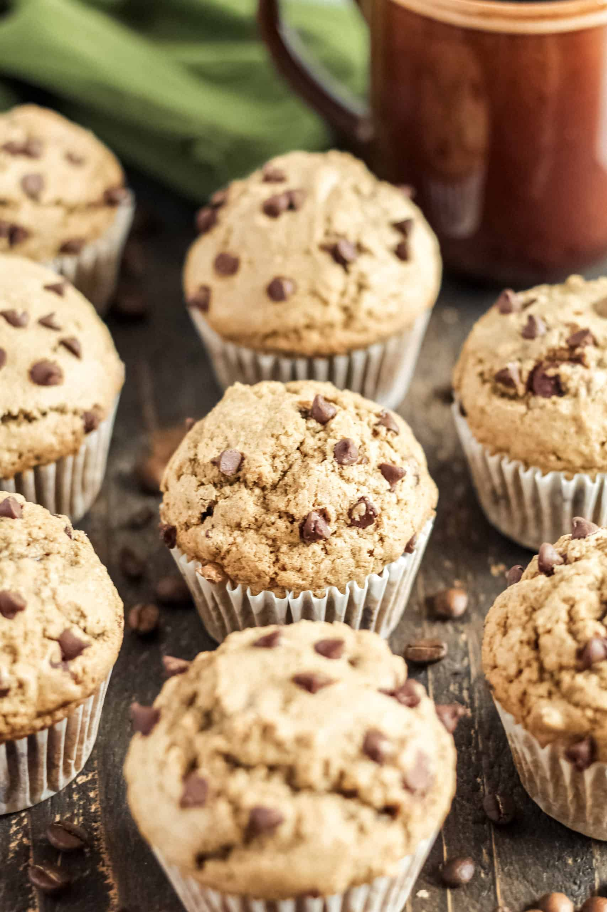
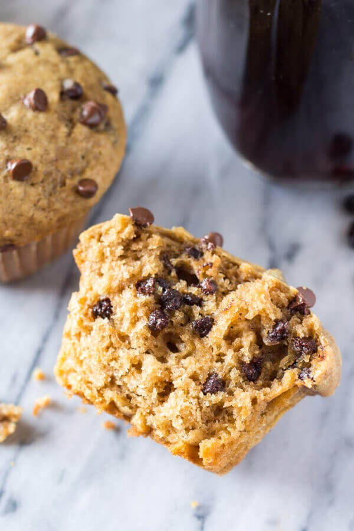

Cappuccino Chocolate Chip Muffin

There's nothing better than waking up in the morning with your favorite beverage. I personally love to wake up to a fresh brewed cappuchino complete with some steamed conconut milk! The only thing that makes it better is a fresh baked muffin!
When I'm on the go these muffins do the trick! The rich robust flavor of your favorite coffee and the sweet gooey chocolate moresels spread through out! Bake these off the night before and pop them in the mircrowave for warm sweet treat in the morning!
Now i love Chocolate chip muffins and double chocole chip muffins but the idea of combining the favor of my favorite brand of coffe with a moist cake and chocolate chips just started making my mouth water.
So I got to work, doctoring my basic muffin base recipe and these Cappuccino Chocolate Chip Muffins are the result! Making them bakery style meant a few things:
- The muffins have to be gigantic
- They have to be slightly more cake like texture
- They must have the sky high, perfectly domed muffin tops
- There coudl be no skimping on chocolate chips

Cappuccino Chocolate Chip Muffins
These Cappuccino Chocolate Chip Muffins are infused with delicious coffee flavor, rediculously fuffy & super moist, filled with melty chocolate chips & the best way to get your morning started right!
Prep Time
20 mins
Cook Time
18 mins
total time
38 mins
Ingredients
- 3 cups all-purpose flour, careful not to over measure, 375g
- 1 tablespoon baking powder
- 1/2 teaspoon baking soda
- 1/2 teaspoon salt
- 1/2 cup oil, canola or vegetable
- 3/4 cup granulated sugar
- 1/2 cup packed brown sugar
- 1 tablespoon vanilla extract
- 2 large eggs, room temperature
- 1/3 cup sour cream, room temperature
- 3/4 cup buttermilk, room temperature
- 1/4 cup of coffee extract, or strong espresso, room temperature
- 1 and 1/4 cup of miniature chocolate chips
Instructions
- Preheat the oven to 425F degrees. line a muffin pan with papers or grease and flour each cavity. You'll end up with about 14-15 muffins total.
- In a large bowl combine the flour, baking powder & soda, salt, both sugars and whisk untill everything is clump free.
- In a separate bowl, combine the oil, vanilla extract, eggs, sourcream, buttermilk, coffee extract. Whisk until thoroughly mixed.
- Pour the wet ingredient over the dry and mix until everything is hydrated and only a few lumps remain. Be careful not to over mix the batter, the less stirring the more cake like structure.
- Add the mini chocolate chips to the batter and fold in to the batter. Propper Folding techniqueStart by using a rubber scrapper to scrape around the sides of the bowl and then through the center of the bowl. Repeat this process until the chips are mix throughout.v
- Spoon batter into the prepared muffin tin, filling the tin/papers to the top. You should end up with 14-15 muffins.
- Bake in the preheated oven at 425f degrees for 5 minutes. Then, without taking the muffins out of the oven, tunr the oven down to 375F degrees and continue baking for about 12-15 minutes, or until an inseerted tooth pick comes out clean or with a few moist crumbs. You can also lightly press a finger into the top of the center of the muffin top. If the muffin springs back then the muffins are ready to take out!
- allow the muffins to cool in their pain for about 5 minutes before removing from the muffin tin. Transfer them to a wire rack to cooler the rest of the way.